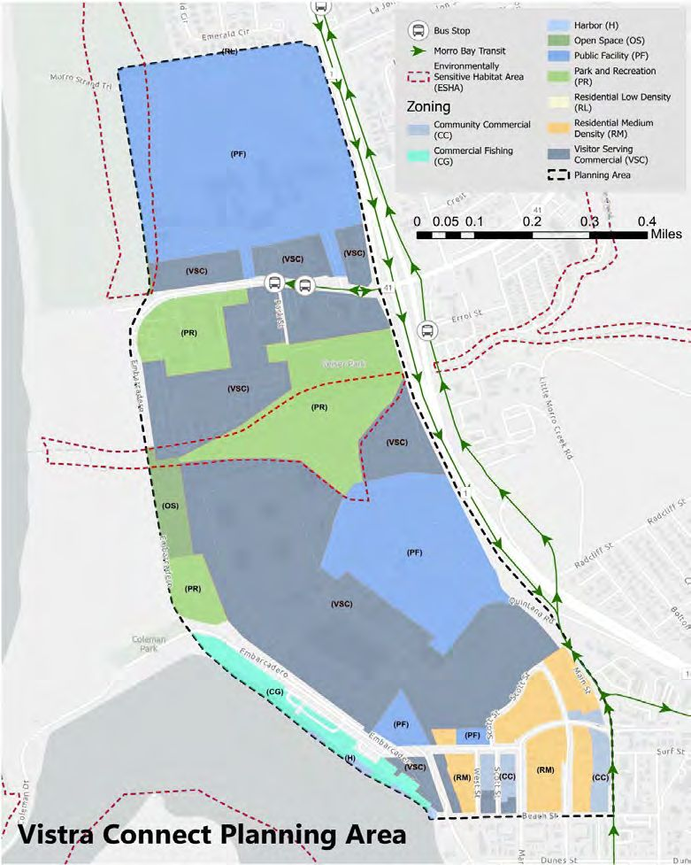
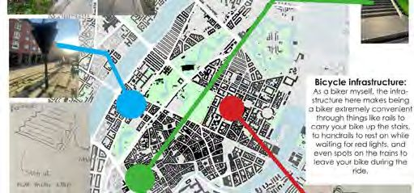
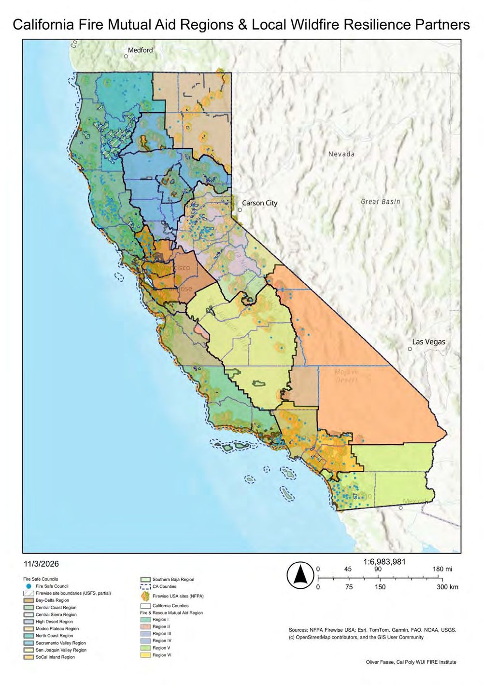

01.1
01.1
Common Ground
A 17-acre former industrial site in San Luis Obispo redesigned as a 230-home neighborhood.
Read MoreSelected Work
The portfolio follows how I work: design places, test them with data, then plan for the hazards that shape them.
It starts with places: who lives there, how they move, and what the land allows.
01.1
A 17-acre former industrial site in San Luis Obispo redesigned as a 230-home neighborhood.
Read More
01.2Morro Bay's decommissioned power plant site reimagined as a mixed-use waterfront district.
Read More 01.3
01.3
A car-oriented intersection redesigned with courtyard homes, bike lanes, and a public plaza.
Read More
01.4 01.5
01.5
Then I test places against data: spatial databases, automated geoprocessing, and maps people outside GIS can read.
 02.1
02.1
800+ field points from 40 years of reports turned into one geodatabase and five automated cross sections.
Read More 02.2
02.2
Hydrographic surveys turned into gap-checked depth rasters clipped to the shoreline.
Read More 02.3
02.3
Port habitat restoration sites turned into a public map tour with drone imagery.
Read MoreRepeatable drone surveys organized for year-over-year comparison and GeoAI change detection.
Read More 02.5
02.5
20 years of scattered records rescued into a searchable map of 70+ studio projects.
Read MoreFinally, the hazards: environmental review and wildfire research that decide where growth can safely go.

03.1Mapping how a community's plans affect wildfire risk, district by district.
Read More 03.2
03.2
GIS constraints analysis that kept a hillside neighborhood off steep, fire-exposed terrain.
Read More 03.3
03.3